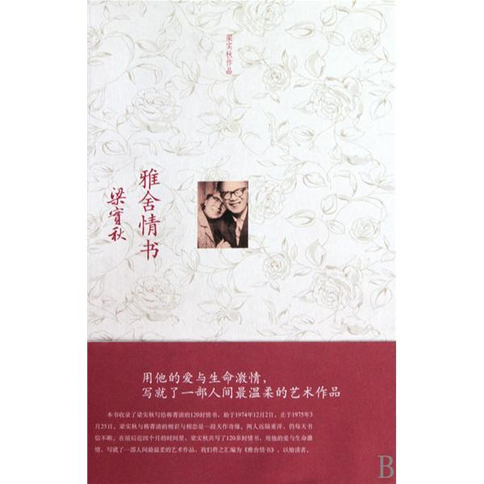

雅舍情书
作者：梁实秋
摘抄人：吴泽发 时间：2013.11
（一）我遇见你，你遇见我，我俩相逢像传奇。你靠近我，我靠近你，我俩从此不分离。
（二）凡是真正的纯洁的爱，绝大多数是一见倾心的，请注意这个“见字。”谁说“爱情是盲目的？”一点也不盲目。爱是由眼睛看，然后窜入心窝，然后爱苗滋长，然后茁壮，以至于不可收拾。
（三）其实外面的气温不会影响到我们内心的热度。只要你我合作，永久维持我们两颗心融在一起燃烧着的圣火，永久炽盛，永久不灭。你一走进去，就好像黑暗的舞台上骤然开放了灯光，里里外外的人都注释着你，真不知你哪来的那么大的魅力！
（四）你的笑容，你的笑声，使我心醉；你的笑容笑声一敛，转为一阵阵沉寂或是隐晦的时候，你又使我惶惑、战栗、心痛。
（五）离别的阴影笼罩了我的心，我无法摆脱它。你要我在你跟前笑，快乐，我已经这样努力做了；可是你知道，人总是要瞻前顾后的，我在对你微笑时，有时候是纯粹的忘形的心花怒放，有时候却是同时在抑制我的酸苦，勉强做出欢忭的样子。
（六）我写此信的时候，遥想你在酣睡，像是一朵在夜晚敛起它的花瓣，静静的散发它的缕缕的芳香。没有一丝的风吹拂你，没有一只蜂蝶趋附你，有无数的天使在呵护你，给你平安，甚至于我的灵魂也被摈斥，不准擅入你的梦中。
（七）亲亲你不要顾虑别人的话，不管那是出于善意与否。我们两个已经心甘情愿的走到了这个地步，只有再往前进的一条路。我会尽我的力安排我们未来的生活。你是我从来未见过的伟大的独立女性，我心中最大的安慰是你信任我，无保留的信任物品，我将竭尽我的一切以求不负你的信任。
（八）人人都说“婚姻是爱情的坟墓”，我不这样想，我知道你也不这样想，爱情像火，需要随时添加柴火煤炭，使它愈燃愈炽，即使风暴来袭也不会熄灭；如果火苗本来微细，那当然就会随时烟消火灭，禁不起风吹雨打，不需要等到婚姻的考验，早就化为乌有了。
（九） 我发现你有一颗纯洁的心，你有浓郁的情爱，你有高度的怜悯与同情，你有无止境的对美的追去，你有智慧，有决心，有毅力。
我发现你有一颗纯洁的心，你有浓郁的情爱，你有高度的怜悯与同情，你有无止境的对美的追去，你有智慧，有决心，有毅力。
（十）日子过得太快，好可怕。我们在暂别之前怎样珍视我们的时间，无论如何加以珍视，时间还是毫无容情的逝去！时间是人最伟大的敌人，但是有你单独的和我在一起，我就忘了时间，一刹那无异于永恒。
（十一）我写信嘱咐你的话，你说你全答应，我好心酸！我爱你！我愿你快乐。如果你听了我的话而不快乐，那么你就不要听我的话，我不怪你。
（十二）我爱你，用我这一生，所有的呼吸，微笑和眼泪！
（十三）我们要充分享受相爱的生活，一分一秒也不离开，永久永久日日夜夜相厮守。爱，你赞成吗？总之，此事你独自决定，无论如何决定我都遵守。
（十四）我不愿因为爱你反而伤害你。你现在是不是也想到了这一点，如果是的，请你告诉我，我将抑制住我的一切的愿望，静静地听你的吩咐。
（十五）我平生做事，永远不悔。大事小事一样，一经决定，决无三心二意，我勇往直前，也许我错了，没话说，我受其后果。我想你也是这样的脾气，所以我们惺惺相惜，能一见如故。爱人，人人茫海，朗朗乾坤，我们两个居然能遇合在一起，这是，天假良缘，在婚前婚后，我们都要以全副力量努力相爱，莫辜负这一段天上人间的好合。
（十六）爱人，我想念你，我想念你，我想念你！我愿你不要这样的想我，因为相思实在太苦。你少想我一些，也许可以少痛苦一些。
（十七）我乞求你也别再改变主意。你说你反封建，我也反封建。我愿牺牲一切，今早与你结合在一起。海可枯，石可烂，我要尽早和你成婚。
（十八）我的心是资料储藏室，藏的全是些你所留下的印象，一颦一笑，一举一动，一喜一阵，都留在我的心里了，我随时调取细细的回味。
（十九）亲爱的人，你快活不？我最大的快乐就是使你快乐。我不能使你快乐，那便是我最大的苦痛。
（二十）爱，我写这信，心情十分激动，也许我的心每一次搏动都引起了你的心弦的弹动。我相信你的心是很密很密的和我心心相印。你是我所最爱的惟一的人。当然，我也是你所最爱的惟一的人。
（二一）“现在”就是目前的感受。以我们两个来说，我深深地爱着你，你也深深地爱着我，爱与被爱是至高无上的幸福。